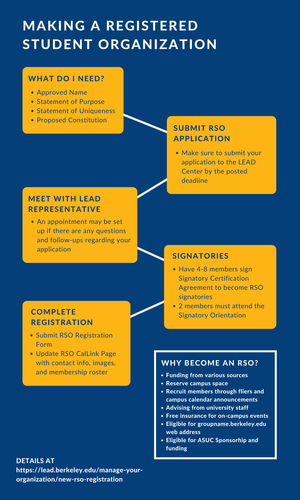

How to make a Registered Student Organization

What do I need?
- Approved name
- Statement of purpose
- Statement of uniqueness
- Proposed constitution
Submit RSO application
- Make sure to submit your application to the LEAD Center by the posted deadline.
Meet with LEAD representative
- An appointment may be set up if there are any questions and follow-ups regarding your application.
Signatories
- Have 4 to 8 members sign the Signatory Certification Agreement to become RSO signatories.
- 2 members must attend the Signatory Orientation.
Complete registration
- Submit the RSO Registration Form.
- Update the RSO CalLink page with contact info, images, and membership roster.
Why become an RSO?
- Funding from various sources
- Reserve campus space
- Recruit members through fliers and campus calendar announcements
- Advising from university staff
- Free insurance for on-campus events
- Eligible for a groupname.berkeley.edu web address
- Eligible for ASUC sponsorship and funding
Details at https://lead.berkeley.edu/manage-your-organization/new-rso-registration
For a detailed breakdown to create an RSO, please check out this document . Dates on this document may be inaccurate so please check with the LEAD Center for the exact registration deadlines.